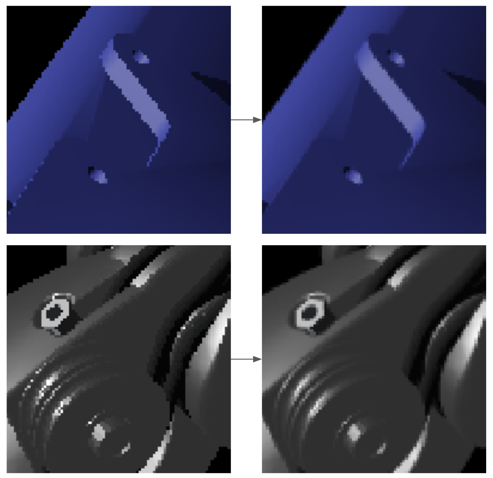
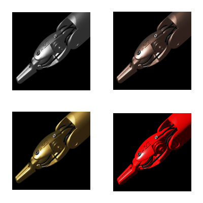

Ray-traced shadows.

Anti-aliasing.

Physically based materials.

Interactive dynamic simulators are an accelerator for developing novel robotic control algorithms and complex systems involving humans and robots. In user training and synthetic data generation applications, a high-fidelity visualization of the simulation is essential. Visual fidelity is dependent on the quality of the computer graphics algorithms used to render the simulated scene. Furthermore, the rendering algorithms must be implemented on the graphics processing unit (GPU) to achieve real-time performance, requiring the use of a graphics application programming interface (API). This paper presents a performance-focused and lightweight rendering engine supporting the Vulkan graphics API. The engine is designed to modernize the legacy rendering pipeline of Asynchronous Multi-Body Framework (AMBF), a dynamic simulation framework used extensively for interactive robotics simulation development. This new rendering engine implements graphical features such as physically based rendering (PBR), anti-aliasing, and ray-traced shadows, significantly improving the image quality of AMBF. Computational experiments show that the engine can render a simulated scene with over seven million triangles while maintaining GPU computation times within two milliseconds.